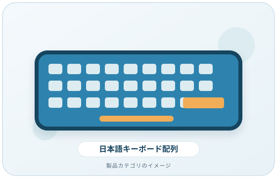
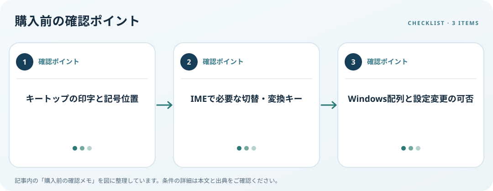

キートップの印字、JIS・英語配列、Windowsの入力レイアウトを購入前に照合します。この記事では仕様の確認順を整理します。
画像・ボタンはAmazonアソシエイトリンクです。適格購入により紹介料を得る場合があります。

Amazon.co.jpで「日本語キーボード JIS 英語配列」を探す ↗

印字と物理配置を確認
JIS配列と英語配列では記号キーや変換関連キーの位置が異なります。普段使う記号、Enterキー周辺、スペースキーの幅を製品写真や寸法図で確認します。画面上の入力言語だけでは、手元の物理配置を判断できません。
IMEの操作を照合
Microsoft IMEには日本語キーボード向けのキー操作例があり、106/109キーと101/102キーで違いがあります。入力切替や変換など必要な操作を挙げ、購入候補の配列に対応するか確認しましょう。慣れたキーがない場合の代替設定も考えます。
Windows側の切替を想定
Windowsではインストール済み配列を追加・切替できますが、物理キーの印字は変わりません。複数配列を使う場合は誤切替に気づける表示と操作方法を確認します。会社や共有端末で設定変更が制限されていないかも先に確認してください。
購入前の確認メモ
- キートップの印字と記号位置
- IMEで必要な切替・変換キー
- Windows配列と設定変更の可否
この記事は出典の公開情報を購入前の確認項目に整理したもので、特定商品の使用・実測・レビュー・ランキング・価格・在庫の調査は行っていません。購入時には利用機器メーカーの最新仕様をご確認ください。
出典
- キーボード入力レイアウト — Microsoft（確認日: 2026-10-10）
- Microsoft 日本語 IME（確認日: 2026-10-10）
- Keyboards — OSHA（確認日: 2026-10-10）